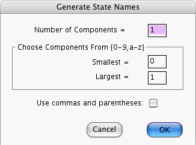

This window opens if you press the Generate State Names... button of the Node Prior-Info. window. You can always enter manually (or import, or cut and paste) the state names of the focus node of the Node Prior-Info. window. This window gives you yet another option. It will instruct the computer to generate certain kinds of name sequences automatically. This is especially useful when the focus node has a large number of states and you wish to label them by an increasing sequence.
Think of each name as a vector with N components. All names generated will have the same number of components N. You enter N into the field labeled Number Of Components =. Each component can only be a single alpha-numeric character—that is, either a letter from a,b, ...,z or an integer from 0,1 , ...9. Assume that alpha-numeric characters form an increasing sequence: 0, 1, 2, ..., 8, 9, a, b, ..., y, z. Suppose Cmin and Cmax are two elements of the sequence such that Cmin is less than Cmax. You can specify Cmin in the field labeled Smallest=, and Cmax in the field labeled Largest=. Let S[Cmin,Cmax] be the set of all alpha-numerics greater or equal to Cmin and smaller or equal to Cmax. The computer will list all the N component vectors such that every component belongs to S[Cmin,Cmax]. If you put a check mark in the Use commas and parentheses box, then adjacent components of the vector will be separated by commas and a parenthesis will precede the first component and follow the last one.
For example,
This window will NOT override the number of states, call it D, that has been specified in the Number of Rows window. If the parameters that you specify imply a sequence of names that is longer than D, then only the first D terms of the sequence will be used. Conversely, if the sequence is shorter than D, then all the terms of the sequence will be used. Those states not covered by the sequence will retain the names they had immediately before you summoned the above window.
When you dismiss the above window by pressing OK, the state names of the focus node become those specified by the window.
When you dismiss the above window by pressing Cancel, the state names of the focus node remain the same as they were immediately before you summoned the window.